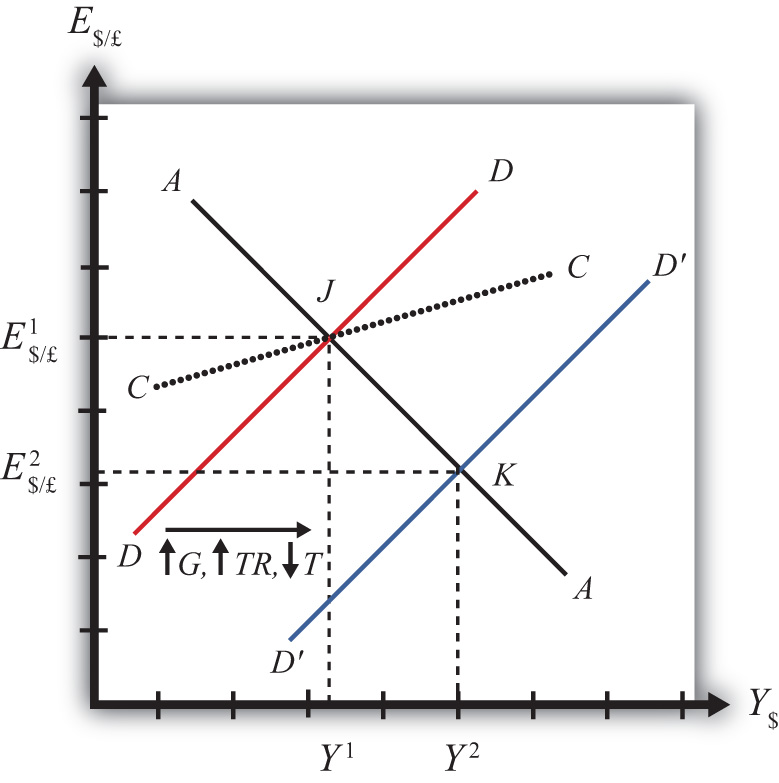

In this section, we use the AA-DD model to assess the effects of fiscal policy in a floating exchange rate system. Recall that fiscal policy refers to any change in expenditures or revenues within any branch of the government. This means any change in government spending—transfer payments, or taxes, by either federal, state, or local governments—represents a fiscal policy change. Since changes in expenditures or revenues will often affect a government budget balance, we can also say that a change in the government surplus or deficit represents a change in fiscal policy.
When government spending or transfer payments increase, or tax revenues decrease, we refer to it as expansionary fiscal policy. These actions would also be associated with an increase in the government budget deficit or a decrease in its budget surplus. If the government acts to reduce government spending or transfer payments, or increase tax revenues, it is referred to as contractionary fiscal policy. These actions would also be associated with a decrease in the government budget deficit, or an increase in its budget surplus.
Suppose the economy is originally at a superequilibrium shown as point J in Figure 21.2 "Expansionary Fiscal Policy in the AA-DD Model with Floating Exchange Rates". The original gross national product (GNP) level is Y1 and the exchange rate is E$/£1. Next, suppose the government decides to increase government spending (or increase transfer payments or decrease taxes). As shown in Chapter 20 "The AA-DD Model", Section 20.3 "Shifting the DD Curve", fiscal policy changes cause a shift in the DD curve. More specifically, an increase in government spending (or an increase in transfer payments or a decrease in taxes) will cause DD to shift rightward (i.e., ↑G, ↑TR, and ↓T all are DD right-shifters). This is depicted in the diagram as a shift from the red DD to the blue D′D′ line.
Figure 21.2 Expansionary Fiscal Policy in the AA-DD Model with Floating Exchange Rates
There are several different levels of detail that can be provided to describe the effects of this policy. Below, we present three descriptions with increasing degrees of completeness: first the quick result, then the quick result with the transition process described, and finally the complete adjustment story.
The increase in DD causes a shift in the superequilibrium point from J to K. In adjusting to the new equilibrium at K, GNP rises from Y1 to Y2 and the exchange rate decreases from E$/£1 to E$/£2. The decrease in the exchange represents a decrease in the British pound value and an increase in the U.S. dollar value. In other words, it is a depreciation of the pound and an appreciation of the dollar. Since the final equilibrium point K is below the initial iso-CAB line CC, the current account balance decreases. (Caveat: this will be true for all fiscal expansions, but the iso-CAB line can only be used with an increase in G; see Chapter 20 "The AA-DD Model", Section 20.8 "AA-DD and the Current Account Balance" for an explanation.) If the CAB were in surplus at J, then the surplus decreases; if the CAB were in deficit, then the deficit rises. Thus the U.S. expansionary fiscal policy causes an increase in the U.S. GNP, an appreciation of the U.S. dollar, and a decrease in the current account balance in a floating exchange rate system according to the AA-DD model.
If the expansionary fiscal policy occurs because of an increase in government spending, then government demand for goods and services (G&S) will increase. If the expansionary fiscal policy occurs due to an increase in transfer payments or a decrease in taxes, then disposable income will increase, leading to an increase in consumption demand. In either case aggregate demand increases, and this causes the rightward shift in the DD curve. Immediately after aggregate demand increases, but before any adjustment has occurred at point J, the economy lies to the left of the new D´D´ curve. Thus GNP will begin to rise to get back to G&S market equilibrium on the D´D´ curve. However, as GNP rises, the economy will move above the AA curve, forcing a downward readjustment of the exchange rate to get back to asset market equilibrium on the AA curve. In the end, the economy will adjust in a stepwise fashion from point J to point K, with each rightward movement in GNP followed by a quick reduction in the exchange rate to remain on the AA curve. This process will continue until the economy reaches the superequilibrium at point K.
Step 1: If the expansionary fiscal policy occurs because of an increase in government spending, then government demand for G&S will increase. If the expansionary fiscal policy occurs due to an increase in transfer payments or a decrease in taxes, then disposable income will increase, leading to an increase in consumption demand. In either case aggregate demand increases. Before any adjustment occurs, the increase in aggregate demand implies aggregate demand exceeds aggregate supply, which will lead to a decline in inventories. To prevent this decline, retailers (or government suppliers) will signal firms to produce more. As supply increases so does the GNP, and the economy moves to the right of point J.
Step 2: As GNP rises, so does real money demand, causing an increase in U.S. interest rates. With higher interest rates, the rate of return on U.S. assets rises above that in the United Kingdom and international investors shift funds back to the United States, resulting in a dollar appreciation (pound depreciation)—that is, a decrease in the exchange rate E$/£. This moves the economy downward, back to the AA curve. The adjustment in the asset market will occur quickly after the change in interest rates. Thus the rightward shift from point J in the diagram results in quick downward adjustment to regain equilibrium in the asset market on the AA curve, as shown.
Step 3: Continuing increases in GNP caused by excess aggregate demand, results in continuing increases in U.S. interest rates and rates of return, repeating the stepwise process above until the new equilibrium is reached at point K in the diagram.
Step 4: The equilibrium at K lies to the southeast of J along the original AA curve. As shown in Chapter 20 "The AA-DD Model", Section 20.8 "AA-DD and the Current Account Balance", the current account balance must be lower at K since both an increase in GNP and a dollar appreciation cause decreases in current account demand. Thus the equilibrium at K lies below the original iso-CAB line. However, this is only assured if the fiscal expansion occurred due to an increase in G.
If transfer payments increased or taxes were reduced, these would both increase disposable income and lead to a further decline in the current account balance. Thus also with these types of fiscal expansions, the current account balance is reduced; however, one cannot use the iso-CAB line to show it.
Contractionary fiscal policy corresponds to a decrease in government spending, a decrease in transfer payments, or an increase in taxes. It would also be represented by a decrease in the government budget deficit or an increase in the budget surplus. In the AA-DD model, a contractionary fiscal policy shifts the DD curve leftward. The effects will be the opposite of those described above for expansionary fiscal policy. A complete description is left for the reader as an exercise.
The quick effects, however, are as follows. U.S. contractionary fiscal policy will cause a reduction in GNP and an increase in the exchange rate (E$/£), implying a depreciation of the U.S. dollar.
The United States maintains a floating exchange rate. In the past few years, its government budget deficit has risen to a very high level. At the same time, its trade deficit has also become much larger.
Suppose the government reduces government spending to reduce the budget deficit. Assume the U.S. economy can be described with the AA-DD model. In the adjustment to the new equilibrium, the following variables will be affected in the order listed. Indicate whether each variable rises (+) or falls (−) during the adjustment process.
| Indicate + or − | |
|---|---|
| Government Demand (G) | |
| Aggregate Demand (AD) | |
| Aggregate Supply (Y$) | |
| Real Money Demand (L[i$,Y$]) | |
| U.S. Interest Rates (i$) | |
| U.S. Rate of Return (RoR$) | |
| Exchange Rate (E$/£) | |
| Foreign Rate of Return (RoR£) | |
| Real Exchange Rate (q$/£) | |
| Current Account Demand (CAD) | |
| Aggregate Demand (AD) |
Once the final short-run equilibrium is reached, indicate the effect of the decrease in government spending on the following variables:
| Indicate + or − | |
|---|---|
| U.S. Government Budget Deficit | |
| U.S. Dollar Value | |
| U.S. Current Account Deficit | |
| U.S. GNP |
Consider the following actions/occurrences listed in the first column. For each one, use the AA-DD model to determine the impact on the variables from the twin-deficit identity listed along the top row. Consider the final equilibrium short-run effects. Use the following notation:
+ the variable increases
− the variable decreases
0 the variable does not change
A the variable change is ambiguous (i.e., it may rise, it may fall)
| Impact on | ||||
|---|---|---|---|---|
| Sp | I | IM − EX | G + TR − T | |
| a. A decrease in investment demand with floating ERs | ||||
| b. A decrease in investment demand floating ERs | ||||
| c. An increase in foreign interest rates under floating ERs | ||||
| d. An increase in government demand under floating ERs | ||||